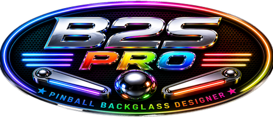
Build a living backglass.
B2S Pro keeps the proven original Backglass Designer workflow and adds modern editing, one-picture animation, realistic motion, rolling balls, pivots, physics, improved lighting, powerful flashers, and easier layer control.
The modern B2S Pro workspace
The main toolbar groups the most-used jobs: project commands, image tools, reels and LEDs, lights and flashers, snippets, animation, and final DirectB2S creation/testing. The redesigned dark interface makes active objects and editing modes easier to see.
- Import the backglass artwork with Import Backglass Image.
- Use Backglass Brightness when the base image needs global adjustment.
- Add and arrange reels, LEDs, lights, flashers, snippets, and animations.
- Use Step 1 — Create DirectB2S File, then Step 2 — Backglass Preview & Test.
Resizable editor windows remember their last size, position, monitor, DPI-adjusted bounds, and maximized state. Set a window once; B2S Pro restores it the next time it opens.
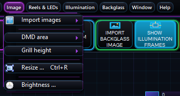
Control everything from Layers
Open Window > Layers. The list runs from front to back and includes lamps, flashers, snippets, picture-animation groups, scores, and the canvas.
Find and select
Filter by object type or name. Use Ctrl and Shift to select multiple objects.
Order
Drag rows to reorder them, use To Front/To Back, or assign a specific Z layer.
Protect work
Show / Hide controls visibility. Lock / Unlock prevents accidental movement.
Edit in place
Right-click and open Edit Selected Object for masks, paths, pivots, physics, or trough creation.
Canvas Placement can put snippets, lights, flashers, reels, and LEDs in front of or behind the backglass canvas. Mask Placement controls whether an object participates behind a mask.
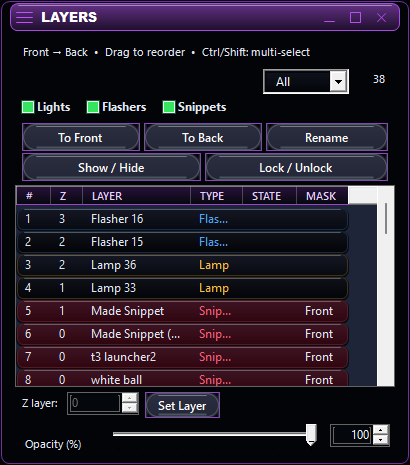
Create and edit snippets
Add an existing image
- Click Add Snippet and select a PNG or other supported image.
- Place the snippet on the Backglass or DMD canvas.
- Drag to move it, use its corner handles to resize it, and drag the rotation handle to rotate it live.
Make a snippet from the current artwork
- Click Make Snippet.
- Use Quick Selection to mask the part of the Backglass or DMD image you want.
- Click OK. B2S Pro creates a transparent snippet at the exact source position, so it can cover the original artwork or be moved elsewhere.
| Quick Selection tool | Use |
|---|---|
| Circular Marquee | Draw an oval selection. Hold Shift for a perfect circle. |
| Lasso | Trace an irregular outline by hand. |
| Brush | Paint the mask. Hold Alt while brushing to erase. |
| Auto Mask | Build a selection from related image pixels. |
| Invert Mask | Swap selected and transparent areas, including feathered edges. |
Mouse wheel zooms. Middle drag or Space + drag pans. Ctrl+Z and Ctrl+Y undo and redo mask edits.
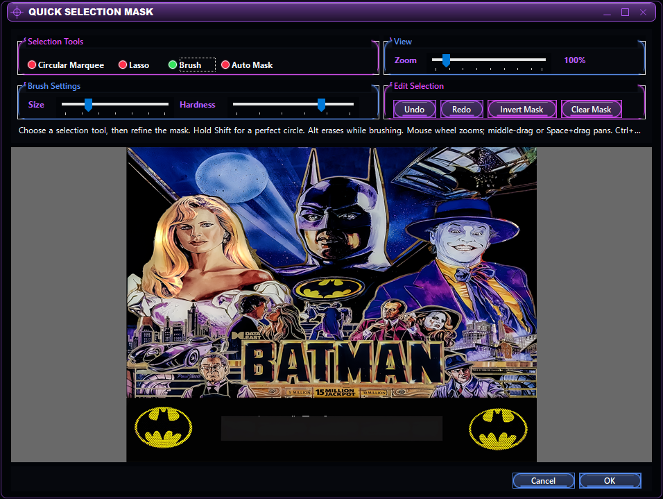
Create a picture animation
B2S Pro can build a normal backglass animation from one animated GIF or from an ordered set of transparent PNG frames. The result appears as one manageable object instead of hundreds of separate layer rows.
- Open Animation, then choose the picture-sequence import command.
- Click Choose PNG / GIF. Select either one animated GIF or two or more PNG files.
- Enter the animation name and choose Backglass or DMD screen.
- Set X, Y, width, height, and the frame interval. For a GIF, B2S Pro reads the GIF timing and maps it to the existing animation system.
- Choose Loop continuously and/or Start at backglass startup, then import.
The canvas shows one reference frame while the animation preview plays all frames. Move, resize, rotate, or mask the group like one object. The whole group moves to its new start point; frames do not remain tied to the original location.
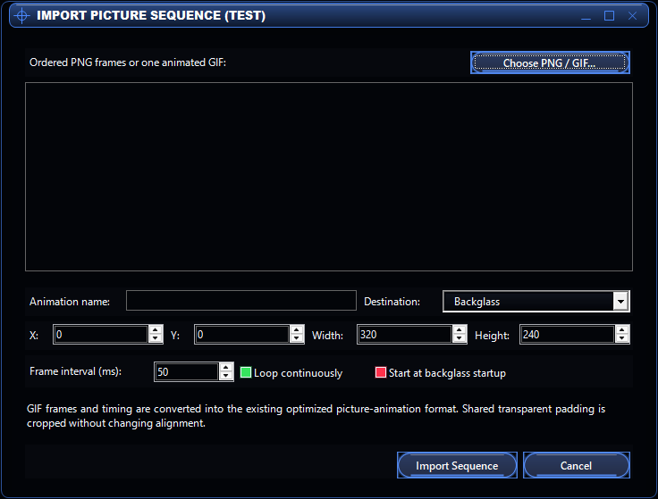
Rotate one picture instead of making many frames
- Add or make a snippet, then open its snippet settings.
- Keep the type as Standard image and enable one-image rotation.
- Choose Continuous or Triggered by B2S / ROM command.
- For a trigger, choose Lamp or Solenoid and enter the command ID.
- Set clockwise/counterclockwise direction, steps per rotation, and frame interval.
- For triggered rotation, choose how it stops: Spin Off, Stop Immediately, Run Till End, or Run to First Step.
Rotation uses the original artwork, stays centered, and advances by elapsed time so large images keep the requested speed. Square wheels retain their original square canvas; rectangular images receive the extra room needed to avoid clipping.
Mechanical rotating images
Choose Mech rotating image for a ROM-controlled wheel. Enter the Mech ID, step count, and direction. B2S Pro uses VPinMAME's absolute 0–359° position and centers the selected segment under the artwork pointer.
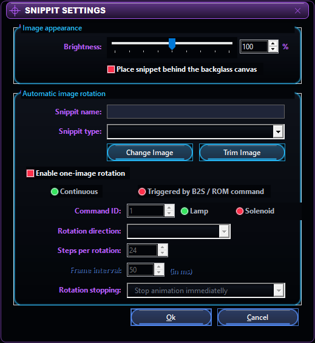
Move artwork along an authored path
- Select a snippet in Layers and right-click Edit Selected Object > Edit Entry Motion Path.
- Click empty space to add path points. Drag a numbered point for exact placement; right-click a point to delete it.
- Set Travel time (ms). Use Play Preview to check the full route.
- Choose Automatic, Solenoid, Lamp, or B2S ID as the start trigger.
- Optionally set Stop/Resume B2S IDs, loop continuously, queue repeated triggers, or enable rolling.
- Save the entry path. Add an independent exit path when the object needs a separate removal route.
Repeated commands can restart or wait in a bounded queue. Movement, pauses, resumes, and endpoints are based on elapsed time and the exact saved center positions.
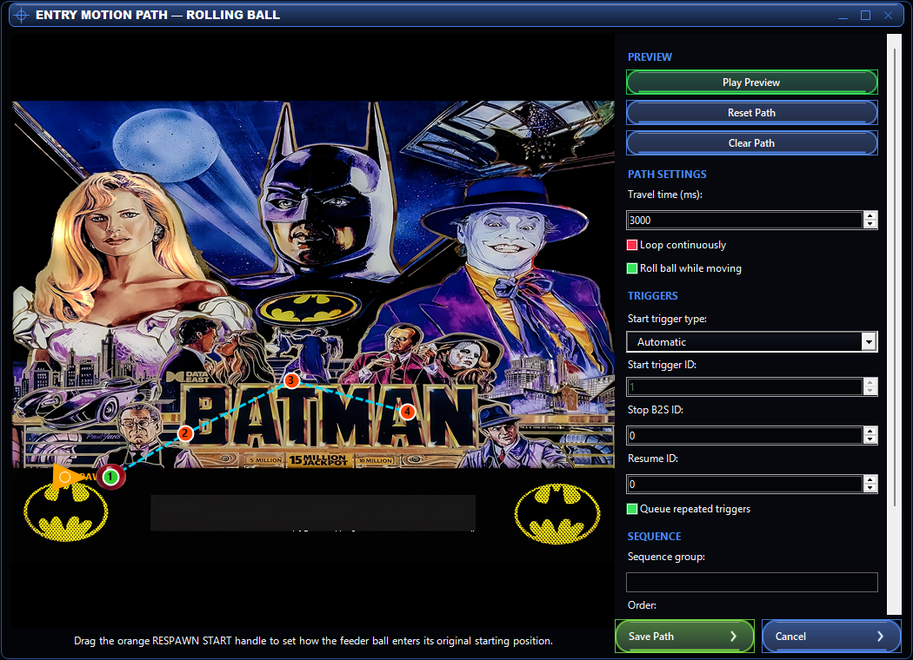
Build a realistic trough sequence
- Place the original ball snippet at the visible feeder/start location.
- In Layers, right-click it and choose Edit Selected Object > Create Trough Animation.
- Enter a unique group name and type the number of balls. The visible slots update immediately as the number changes.
- Draw the entry and exit paths.
- Drag the green FIRST and blue LAST handles to set the trough slots.
- Click any displayed ball to select its slot. Use Choose PNG for Selected Ball to give that slot a baseball, basketball, pool ball, or other image.
- Enable Roll balls while moving when wanted, then create the trough.
Feeder respawn direction
In the entry path editor, enable Animate trough feeder respawn. Drag the orange RESPAWN START arrow into the hidden compartment or just outside the visible trough and set the slide time. The feeder ball slides from that direction into the original starting position; it does not travel across the whole screen.
What happens at runtime
Entry fills the first available slot. Exit removes the first occupied ball and compacts every survivor into the exact preceding slot. The feeder can respawn while an earlier ball continues down the path, and repeated triggers can wait in order. Every ball keeps its own PNG and rolling phase so neighboring stripes do not twitch when another ball stops or exits.
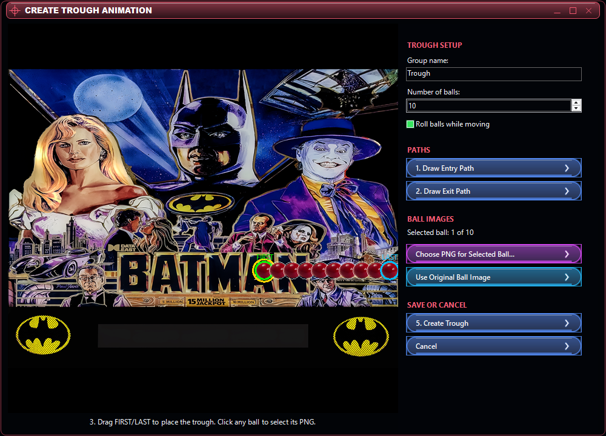
Create a pivot or hinged animation
- Select the movable snippet and open Edit Pivot Animation from Layers.
- Enable pivot animation and set the down angle, up angle, and movement time.
- Click Set Hinge Point, then click the stationary pivot on the artwork.
- Click Set Flipper Tip, then click the moving end.
- Preview both positions and choose Named Commands, ROM Solenoid, ROM Lamp, or B2S ID as the trigger.
- Save the pivot animation.
The artwork rotates around the authored hinge, not the center of its box. Its paint area expands only as needed, preventing clipping, distortion, stale pixels, or a bounding box that grows after repeated edits.
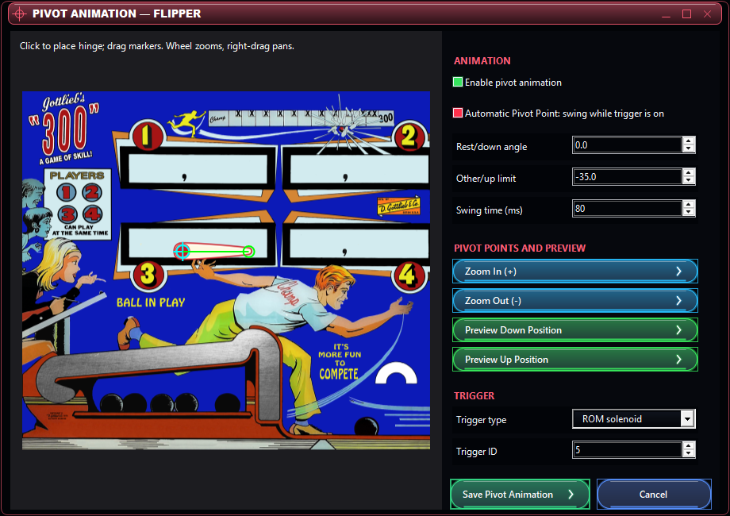
Add a playable ball to a backglass
Use one transparent ball snippet as the physics ball. Open Edit Physics Boundaries from Layers; the editor is divided into Ball, Boundaries, Bumpers & Switches, and Launcher tabs.
| Tab | What to do |
|---|---|
| Ball | Enable physics, optionally enable rolling, select a pivot-enabled flipper snippet, then set gravity, flipper strength, and boundary bounce. |
| Boundaries | Create named polylines by clicking points. Drag for exact placement, splice a point into a line, rename or delete a boundary, and lock completed boundaries against accidental edits. |
| Bumpers & Switches | Add circular bumpers and rectangular switch zones. Give each switch zone the ROM switch ID to pulse when the ball enters it. |
| Launcher | Enable the launcher; choose Solenoid or B2S ID; set the ID, X/Y origin, direction angle, strength, random angle, random strength, and capture radius. |
A launcher only fires a captured ball. Repeated pulses are ignored while the ball is in flight. When it returns to the capture area, the launcher holds and rearms it for the next cycle.
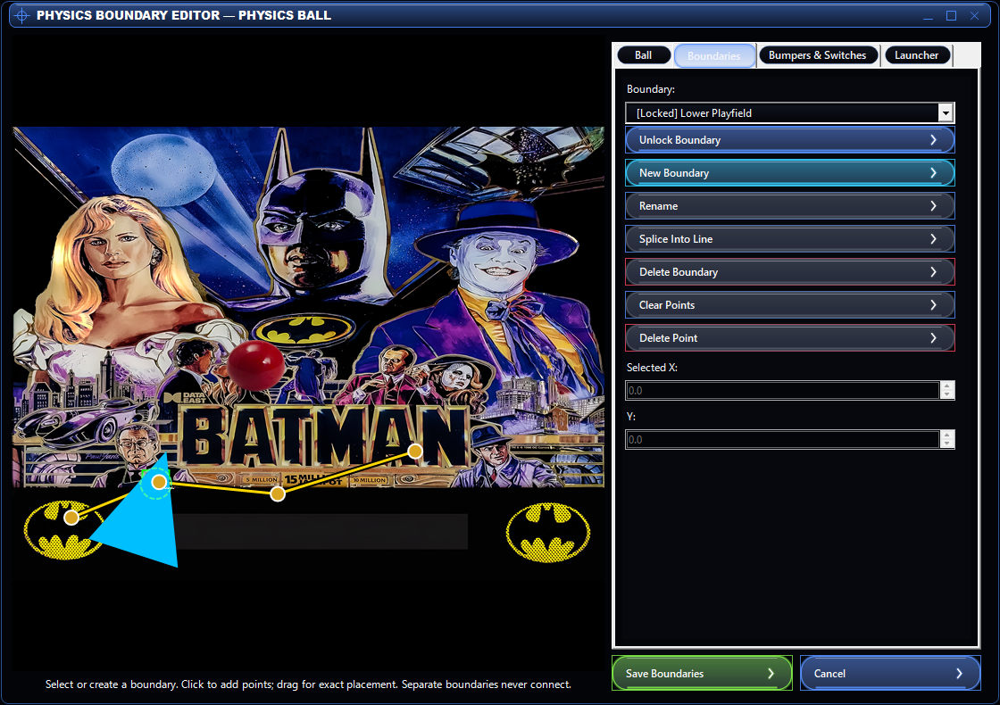
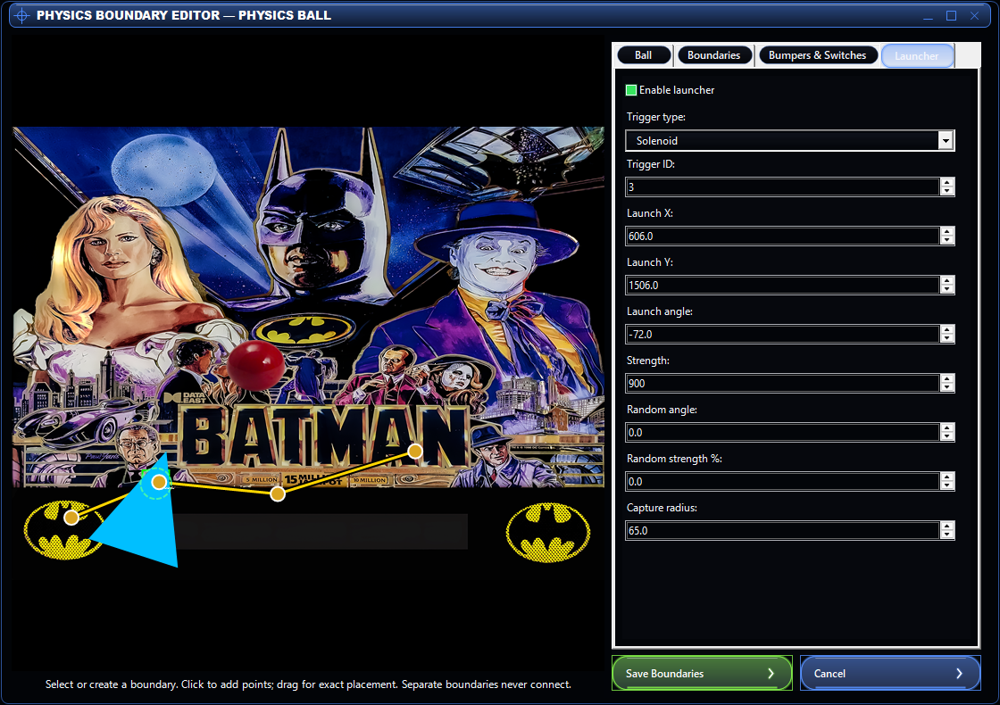
Build natural lamps from the artwork
- Click Add Light, place the light box, and assign the required ROM/B2S ID in the Illumination tools.
- Double-click the light to open Light Settings.
- Adjust spread, edge softness, intensity, diffusion/contrast, and light temperature while watching the selected-light preview.
- Use Quick Selection when the light must follow a specific shape instead of the complete box.
- Use Blinker Runtime only when the lamp itself should blink at a saved interval.
Pixel-aware illumination brightens the existing artwork instead of painting a plain colored rectangle. Dark and black artwork stays dark enough to preserve contrast.
Lights have the same direct rotation behavior as snippets: drag the rotation handle and watch both the light and its selection box rotate live.
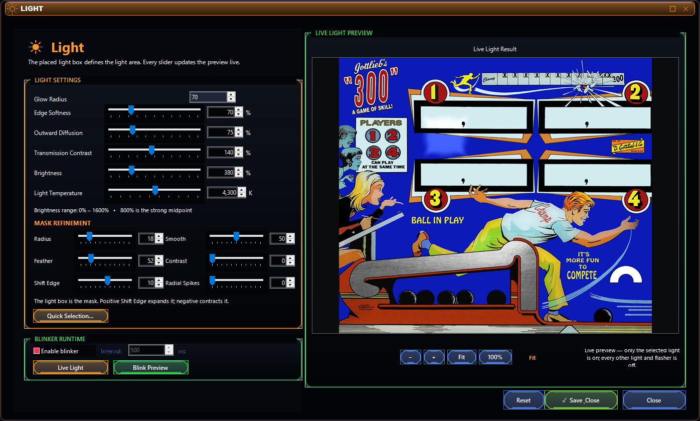
Create a true artwork flasher
- Click Add Flasher. B2S Pro places only the flasher box so you can position and size it first.
- Double-click the flasher box to open the dedicated Flasher editor.
- Adjust every setting while watching the full-backglass live preview. Only the selected flasher is lit.
- If required, click Quick Selection and create or invert a mask. Returning to the editor keeps the established brightness and diffusion settings.
- Click Test Pulse once to flash for 75 ms every second. Click it again to stop.
- Close the editor when finished. Slider values save automatically.
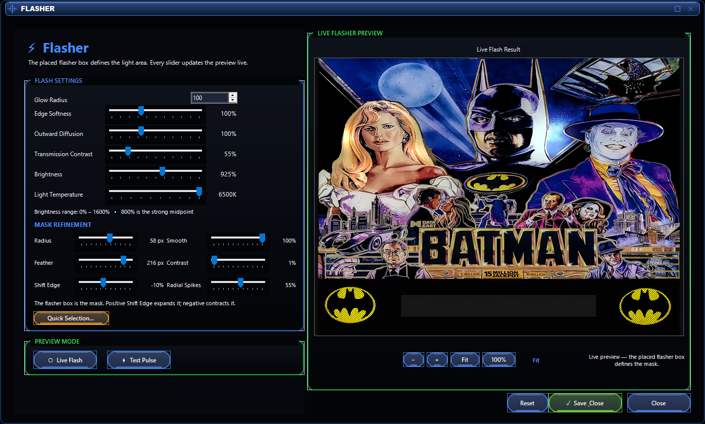
| Control | Effect |
|---|---|
| Glow Radius | Sets how far the main glow extends beyond the flasher box. |
| Edge Softness | Changes the hardness of the illuminated edge. |
| Outward Diffusion | Spreads the flash through the surrounding artwork. |
| Transmission Contrast | Balances the bright transmission against the retained artwork contrast. |
| Brightness | Runs from 0–1600%; 800% is the strong midpoint. |
| Light Temperature | Moves the flash from warm to neutral to cool without replacing the artwork color. |
| Radius / Smooth | Broadens mask influence and reduces rough or jagged mask edges. |
| Feather / Contrast | Controls the faded edge width and how soft or firm that transition appears. |
| Shift Edge | Positive values expand the mask; negative values contract it. |
| Radial Spikes | Adds the outward splash rays. Zero removes them; higher values extend the splash. |
Like snippets and lamps, flashers rotate live with their handle and retain a correctly sized rotated selection box.
Make EM score reels look deep and backlit
B2S Pro can turn an ordinary flat EM reel into a drum-shaped reel behind reflective glass. The printed black number stays dark while the pale reel material receives warm, neutral, or cool light from behind.
- Create or select an EM reel score frame on the backglass.
- In the Reels & LEDs window, click Reel Lighting & 3D....
- Enable Realistic 3D backlighting. The complete selected score display updates immediately.
- Set Backlight brightness for the lamp strength and Color temperature for warm incandescent through cool LED-style light.
- Raise 3D depth to exaggerate drum curvature and the recessed window shadow.
- Raise Glass reflection to add the highlight that runs continuously across the whole score window.
- Close the window when the reel looks right. Every setting is retained automatically and remains attached to that score frame in the project and exported DirectB2S file.
- Click Add Reel or LED Frame again to create the next numbered reel with the complete visual setup copied from the selected reel, including its artwork, dimensions, illumination, rotation, perspective, behind-canvas placement, and 3D controls. B2S Pro separately assigns the first unused Player 1–4 route, the next score-digit range, and the matching player rollover illumination ID.
| Control | Effect |
|---|---|
| Backlight brightness | Controls how strongly the translucent reel paper glows while the printed number remains dark. |
| Color temperature | Runs from 2000 K warm incandescent light to 6500 K cool light, matching the illumination tools. |
| 3D depth | Adds drum curvature, edge shading, and recessed depth to each reel opening. |
| Glass reflection | Adds a restrained reflection across the complete score display instead of repeating it separately on every digit. |
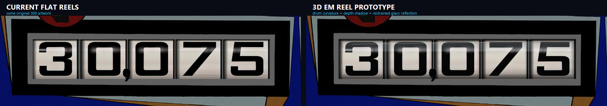
Scores, reels, and LEDs
Create reel or LED frames with the toolbar, then use the Reels & LEDs tool window to set the player, digit count, spacing, score type, reel type, and display state.
- Select a score frame and drag its rotation handle to angle the complete score display.
- Use Layers > Canvas Placement to place a reel or LED display behind the backglass canvas. Transparent canvas openings reveal the live digits while opaque artwork remains in front.
- Custom LED colors survive project save, DirectB2S export, and DirectB2S reopening.
- Live EM reels keep their rolling intermediates, reel sounds, lighting, and score updates when placed behind the canvas.
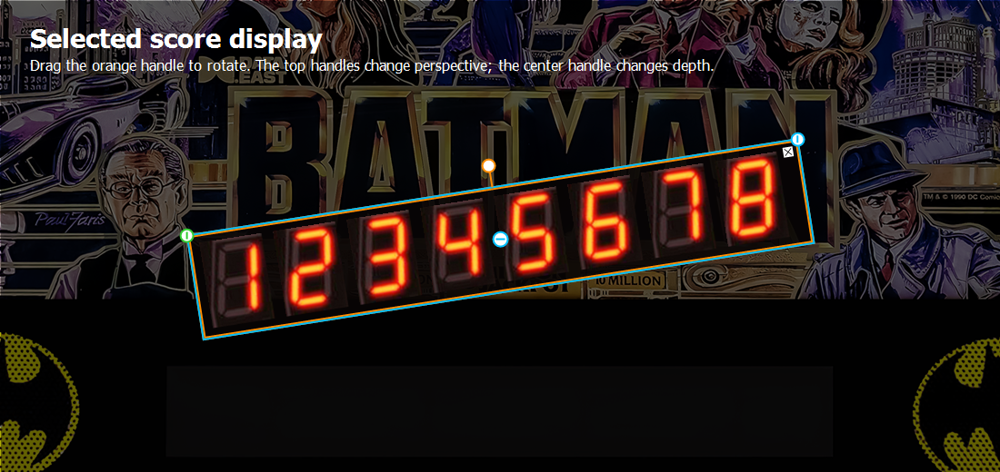
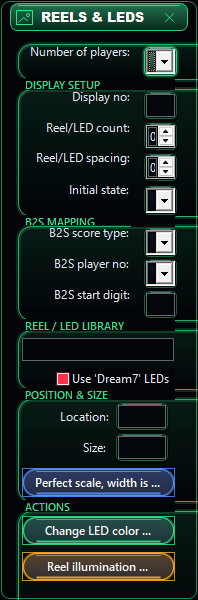
Save, export, and compatibility
Save the editable B2S project first, then create the DirectB2S file and test it with Backglass Preview & Test. Long save/export operations show their progress beside the Step 2 command on the main toolbar.
Runtime-only features such as native one-image rotation, rolling balls, motion paths, trough sequences, pivots, physics, switches, and launchers require the matching B2S Pro Server build. Picture/GIF animations use the established animation format.
Backglass and DMD objects keep separate numeric ID scopes. DMD snippets, illumination, rotation settings, and matching IDs survive project and DirectB2S round trips.
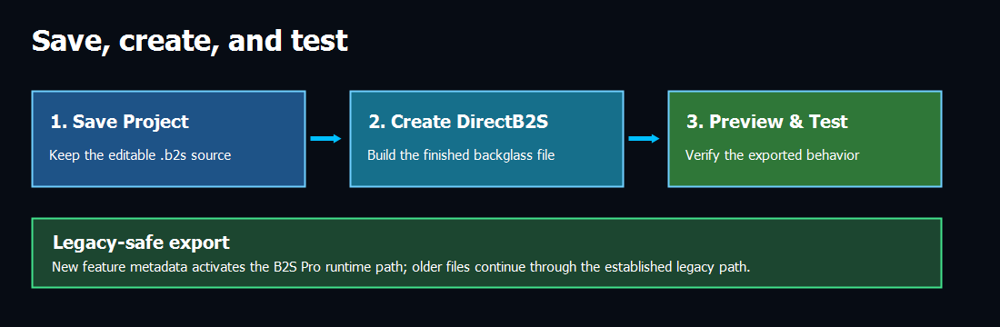
Topics in this B2S Pro guide
The original help contents remain intact. The new top-level B2S Pro — New Features branch contains:
- What is new in B2S Pro
- The modern workspace and saved window layouts
- Layers and multi-object editing
- Add Snippet, Make Snippet, and Quick Selection
- Picture animation from PNG frames or one GIF
- One-image rotation and mechanical wheels
- Motion paths and trigger routing
- Trough animation, custom ball artwork, rolling, and feeder respawn
- Pivot animation
- Ball physics, boundaries, bumpers, switches, flippers, and launcher
- Natural lamp lighting
- Dedicated artwork flashers and mask refinement
- Realistic backlit 3D EM reels
- Score rotation, LED color, and behind-canvas placement
- Saving, exporting, testing, and compatibility